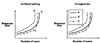
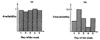

)
FIGURE 10.1 Types of variables.
| Previous | Table of Contents | Next |
It is not what you say, but how you say it.
—A. Putt
One of the important steps in every performance evaluation study is the presentation of final results. The eventual aim of every performance analysis is to help in decision making. An analysis whose results cannot be understood by the decision makers is as good as one that was never performed. It is the responsibility of the analyst to ensure that results of the analysis are conveyed to the decision makers as clearly and simply as possible. This requires prudent use of words, pictures, and graphs to explain the results and the analysis.
Graphic charts such as line charts, bar charts, pie charts, and histograms are commonly used in presenting performance results. Guidelines for preparing such graphic charts are briefly discussed. In addition, a number of graphic charts that have been developed specifically for computer systems performance analysis are described. These are Gantt charts, Kiviat graphs, and Schumacher charts.
There are a number of reasons why a graphic chart may be used for data presentation in place of a textual explanation. First of all, a picture is worth a thousand words. A graphic chart saves readers’ time and present the same information more concisely. It can also be used to interest the reader. Most readers find it easier to look at the figures to quickly grasp the main points of the study and read the text only for details. A graphic chart is also a good way to emphasize or clarify a point, to reinforce a conclusion, and to summarize the results of a study.
One important factor that affects the choice of a graphic chart is the type of variable to be displayed. Variables are of two types: quantitative and qualitative. Qualitative variables, also called categorical variables, have states, levels, or categories that are defined by a set of mutually exclusive and exhaustive subclasses. The subclasses, which are usually expressed in words, can be ordered or unordered. For instance, a computer type with three subclasses—supercomputers, minicomputers, and microcomputers—is an ordered qualitative variable. The variable workload type with three subclasses—scientific workload, engineering workload, and educational workload—is an unordered qualitative variable.
Quantitative variables are those whose levels are expressed numerically. There are two types of quantitative variables: discrete and continuous. For discrete variables, all values of the variable can be counted and put into a one-to-one correspondence with some subset or all of the set of positive integers. The number of values can be finite or infinite, but in either case the number is countable. Number of processors in a multiprocessor system, size of disks in blocks, number of peripherals in a system, are all examples of discrete quantitative variables.
Continuous variables can take uncountably infinite values. In many computer programming languages, they are called real variables. The response time of a job on a system, the weight of a portable computer, and the footprint (base area) of a workstation are all examples of continuous quantitative variables.
The hierarchy of various types of variables is summarized in Figure 10.1. Knowing the type of variable is important, since the type of graphic chart to be used depends upon the type of variable. A line chart is used to show the relationship between two continuous variables. A column chart or bar chart is used when the independent variable (also called x-variable) is a discrete or a qualitative variable.
FIGURE 10.1 Types of variables.
The following guidelines will help you enhance your graphical presentations. Only the guidelines that apply to a large number of cases are discussed; application of these techniques to individual cases is an art which you will learn with experience. Remember, all of the following are guidelines, not rules.

FIGURE 10.2 Direct labeling of curves in (a) is preferable to a legend box in (b).

FIGURE 10.3 Two graphs from the same data. The second graph is more informative.
The preceding list includes only a few of the possible guidelines. Box 10.1 presents a checklist to make it easier for you to check each of your graphs. The checklist is arranged so that a “yes” answer to each question, in general, leads to a better graph. However, in some cases an analyst may consciously decide not to follow a suggestion if it helps in conveying the intended message.
| Previous | Table of Contents | Next |
){kind=link}
){kind=link}
){kind=link}
){kind=link}
){kind=link}